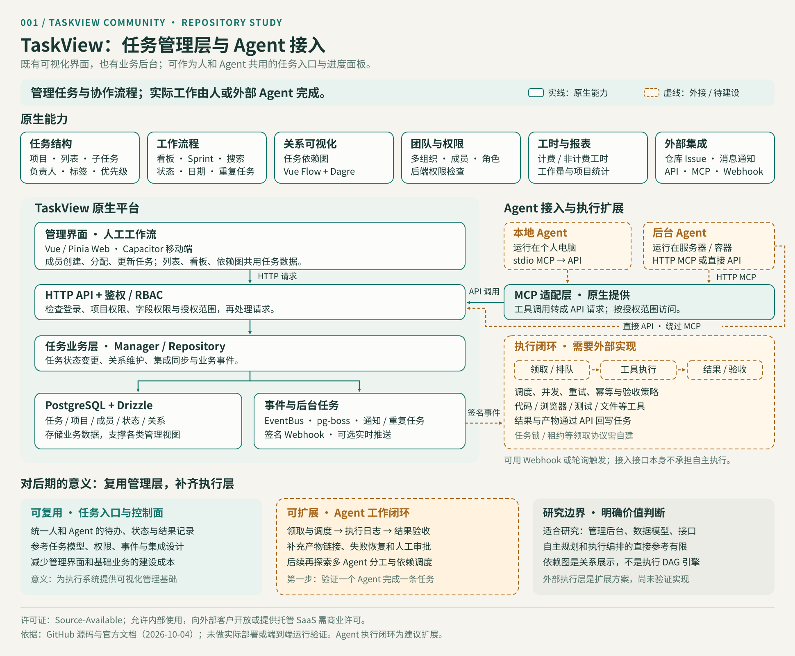

同一份任务，多种视图
parentId 表示子任务；statusId 对应看板状态；complete 保存完成标记。依赖关系存为边，由 Vue Flow 与 Dagre 绘制和布局。
研究摘要 / 先读这六点
Gimanh/taskview-community 是可自托管的项目与任务管理产品。前端提供工作视图，后端提供业务逻辑与数据管理。普通团队由成员完成工作；接入外部 Agent 后，平台可承载任务分配、上下文和进度回写。
关键判断
它是带业务后台的任务管理平台。MCP 提供外部 AI 的操作接口；是否执行任务、如何执行以及如何确认完成，由成员或外部执行系统决定。
从讨论到结论
前端呈现任务，后端保存数据、控制权限并处理业务事件。
成员执行工作，再更新负责人、状态与完成标记。
MCP 提供操作入口，Agent 与执行调度需要另外实现。

parentId 表示子任务；statusId 对应看板状态；complete 保存完成标记。依赖关系存为边，由 Vue Flow 与 Dagre 绘制和布局。
Vue 界面或 API 客户端发出请求，经 Express 路由、鉴权与权限检查进入业务层，再通过 Drizzle ORM 写入 PostgreSQL。
任务变化触发 EventBus；pg-boss 处理异步或定时业务。Centrifugo 可提供实时推送，完成周期任务可生成下一实例。
依据：Gimanh/taskview-community · 任务模型 · Gimanh/taskview-community · 业务逻辑 · Gimanh/taskview-community · 后台队列
02 / 原生能力
以下是主分支与官方文档描述的能力。
本次未部署验证每项功能。
项目、列表、任务、嵌套子任务；负责人、优先级、标签、日期、搜索和历史记录。
适合：需求拆分、缺陷记录、交付清单。
列表与自定义看板、状态、任务依赖图、Sprint 和重复任务。
适合：迭代安排、进度跟踪、依赖梳理。
组织、项目成员、角色与细粒度权限；API Token 的操作与项目范围；SSO 相关能力。
适合：团队分工、访问控制、服务账号接入。
时间记录、计费与非计费工时、工作量统计，以及项目收入和支出相关报表。
适合：内部交付管理、工时与项目成本记录。
GitHub、GitLab、Gitea 的 Issue 同步；Slack 与 Telegram 的通知和任务交互。
Issue 变化同步到任务；完成状态可回写。
HTTP API、TypeScript 客户端、MCP、签名 Webhook；Web 与 Capacitor 移动端。
适合：脚本、外部 AI 和业务系统接入。
依据：Gimanh/taskview-community · README · Gimanh/taskview-community · 仓库集成 · Gimanh/taskview-community · 消息集成
03 / 使用场景
不同场景共用任务管理能力，
实际工作的执行者不同。
输入
需求、缺陷、Issue、成员与迭代安排。
过程
拆成任务和子任务，设置依赖、负责人、状态、日期和工时。
输出
项目进度、任务历史、工时统计与消息通知；代码由开发人员编写。
输入
个人计划或客户工作的内部记录。
过程
整理工作清单，记录时间、金额和完成情况。
输出
可追踪的交付记录与统计。向客户开放实例需另核实商业许可。
输入
人提出任务，Agent 经 MCP 或 API 获取任务上下文。
过程
由外部 Agent 使用自己的工具执行；调度和验收策略另外实现。
输出
状态、备注、产物链接和执行记录回写；形成可视化跟踪。
04 / 入口与出口
区分任务记录、管理自动化和实际执行产物，
便于设计后续系统接口。
管理自动化和执行自动化要分别设计
平台能依据任务事件通知其他系统、生成周期任务。自动编写代码、操作浏览器、运行测试和验收交付，需要外部 Agent 的工具与执行机制。
依据：Gimanh/taskview-community · TypeScript API 客户端 · Gimanh/taskview-community · MCP
05 / 本地与后台 Agent 接入
切换场景，查看职责、接入路径与所需补充。
以“开发一个网站”为例：平台承载任务和进度，成员在设计、开发和测试工具中完成实际工作。
首页设计、登录开发、支付测试。
设置优先级、依赖关系与迭代。
进行中 → 待评审 → 标记完成。
数据库记录变更，事件模块处理后续动作。
兼容 MCP 的本地 AI 客户端启动 taskview-mcp，再转发请求到云端或自托管的 TaskView API。stdio 服务需要 Node.js 24 或以上。
Token 的项目和操作范围与用户权限共同限制访问。
npx -y taskview-mcp，配置 URL 与 Token。
Agent 自己提供文件、终端等执行工具；MCP 负责任务操作。
已有共享 HTTP MCP 和直接 HTTP API 两条入口。若希望任务创建后自动执行，可增加 Webhook 接收器与外部 Worker。
MCP 的 /mcp 接收调用者 Bearer Token；兼容客户端也可走 OAuth。
可轮询任务，或接收 TaskView 的签名 Webhook。
实现去重、并发、超时、失败恢复及工具环境。
保存产物链接、日志与状态，按需要由人确认。
当前场景：成员执行实际工作，TaskView 记录与协调任务。
依据：Gimanh/taskview-community · MCP 接入与 OAuth · Gimanh/taskview-community · Webhook 事件投递
06 / 建议扩展
下表的扩展项是我们的设计方向，
尚未在本次研究中实现。
| 扩展方向 | TaskView 可提供的基础 | 需要我们实现的部分 |
|---|---|---|
| 任务领取与调度 | 任务、状态、负责人、API 与事件。 | 执行记录、原子领取或外部租约、并发限制、事件去重。 |
| 执行环境与工具 | 任务描述与上下文读取。 | 本地或服务器 Runner、隔离工作区、工具权限、资源与时间限制。 |
| 执行失败与恢复 | 历史、状态更新、Webhook 投递记录。 | Agent 的超时、重试、断点恢复和人工接管。 |
| 结果与验收 | 任务备注、状态与外部链接承载能力。 | 代码或文件产物归档、测试与验收规则、审核后确认完成。 |
| 多 Agent 协作 | 子任务、依赖图、项目角色。 | Agent 能力路由、交接、依赖约束执行和结果汇总。 |
两个边界需要保留：依赖图表达任务关系；执行顺序约束需由调度层实现。Git 集成目前主要围绕 Issue，同步范围应按源码确认，不能预设 PR、提交和 CI 状态已全面关联。
07 / 对我的价值
这是结合我们关注的 Agent 系统作出的判断，
以实际接入测试决定是否采用。
界面、任务模型、权限、API 与事件接口可为执行系统提供管理入口。适合研究任务如何结构化、如何受控地交给外部程序。
当前未看到内置的自主规划、Agent 自动领取任务、工具执行与结果验收闭环。研究这些机制时，本项目可作为外围管理层参考。
观察任务模型、角色权限、MCP 授权与事件处理如何组合。适合学习一个完整管理产品怎样向人和外部程序提供一致入口。
若与现有技术栈、部署条件和许可范围匹配，可减少管理界面和基础业务的重复建设；仍需验证版本兼容、权限、并发与升级维护。
保留为 Agent 管理层候选和接口参考。先验证一个 Agent 读取并完成一条测试任务，再决定是否投入后台桥接和多 Agent 调度。
建议的接入顺序 / 尚未实施
连接测试项目，验证读取与权限范围。
让一个本地 Agent 修改测试任务并记录结果。
补充 Webhook 接收器、去重与任务领取机制。
增加工具环境、产物、测试和人工确认。
08 / 可追溯证据
链接固定到本次研究提交，
便于后续复查。